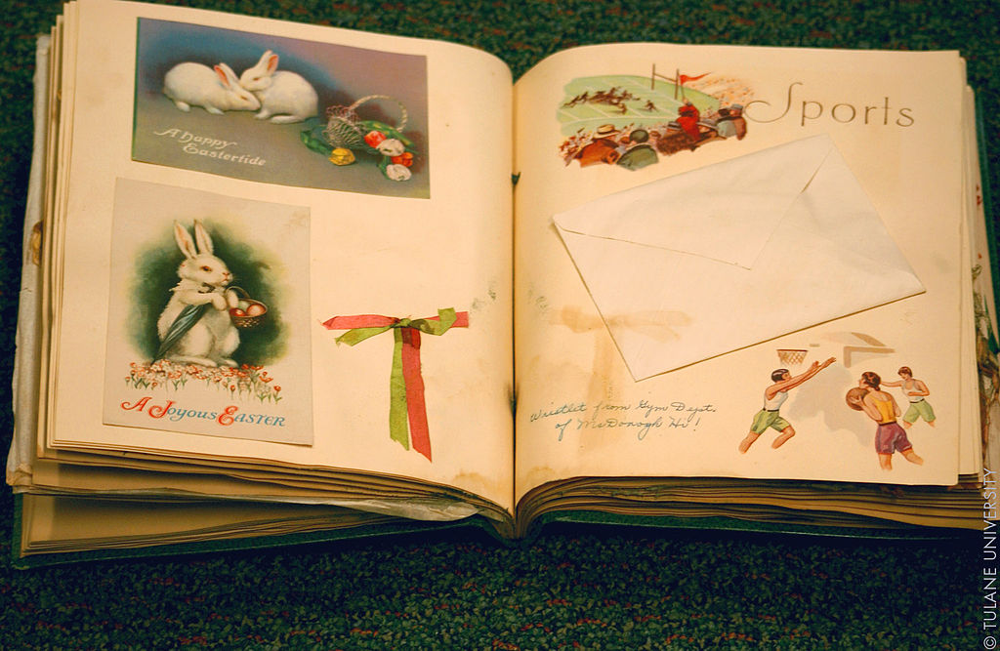

Skrebinimas - įdomi veikla. Vienus ji įtraukia, kitiems atrodo beprasmiška. Mėgstantis popieriaus spalvų, faktūrų ir ramaus kūrimo teikiamą džiaugsmą, tikėtina, išbandęs skrebinimą nebegalės sustoti, nes pats procesas įtraukia taip, jog galima paskęsti jame ilgoms valandoms. Skrebinimo tikslas - įamžinti akimirkas, kad jos liktų prisiminimu, o ne išnyktų negrįžtamai mūsų praeityje.
Išgirdę apie skrebinimą nieko apie jį nežinantys žmonės tik klausiamai pakelia antakius, o papasakojus detaliau, kilsteli ir pečius. Tai atrodo tokia paprasta ir jokios apčiuopiamos naudos neduodanti veikla. Bet tereikia išsitraukti trumpam parodyti albumą ir tada skrebinimas įgauna prasmę. Mes turime socialinius tinklus, kuriuos kartas nuo karto, atiduodami savo privatumą, pildome kasdieniais įspūdžiais. Tai taip pat dalis mūsų istorijos. Visgi, vargu, ar kada nors, po penkių ar dešimties metų, atsikėlę nuo Kalėdų stalo, išsitrauksime mobiliuosius, kad kartu prisimintume praėjusius metus. Bet esu tikra, kad vartysime albumus – po penkių, po dešimties ir juo labiau po dvidešimties metų, kai vaikai paliks namus ir tuščias lizdas atrodys toks didelis. Žinau, kad vartys ir mano vaikai. Kodėl? Todėl, kad jie tai daro jau dabar...
Skrebinimas - hobis ne tik suaugusiems. Jis ypatingai naudingas ir vaikams, nes:
Galima išskirti keletą skrebinimo rūšių.
Tradicinis skrebukas kuriamas naudojant nedidelį kiekį nuotraukų (dažniausiai vieną), didelė dėmesį skiriant puošybos elementams ir detalėms. Kaip ir kiti skrebukai, tradicinis skrebukas turi turėti pavadinimą (temą) arba žinutę nešančią frazę, kuri šiuo atveju tampa pagrindiniu akcentu. Tradiciniuose skrebuose ne visada sutiksite aprašymus (angl. journaling), tačiau nuotrauka ir frazė yra būtini. Plačiau skaitykite čia.
Project Life yra specifinė skrebinimo rūšis, kurioje nuotraukos dedamos ir įmautes su nedidelėmis kišenėlėmis. Ši skrebinimo rūšis ypatinga tuo, kad leidžia išsaugoti daug nuotraukų ir mažesnis dėmesys skiriamas puošybai.Plačiau skaitykite čia.
Ši rankdarbių rūšis - šiek tiek pavojinga, nes yra begalė įrankių, kurie naudojami kuriant skrebukus. Dažnai naujokui susisuka galva ir išsigąstama, kad skrebas - per prabangus hobis. Visgi, patys svarbiausi įrankiai yra tik keli ir juos galima rasti kiekvienuose namuose: